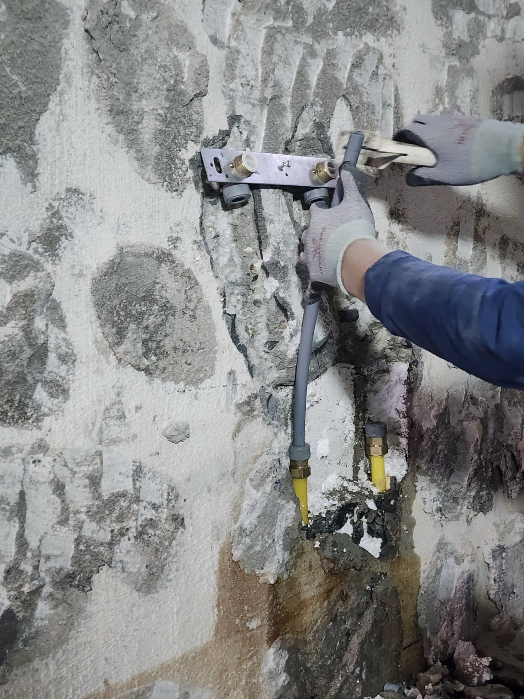

옥천 주택 수전 배관 작업｜연결부 정리와 벽체 몰탈 보수

현장 작업 한눈에 보기
- 현장
- 충북 옥천군 · 주택 수전 배관
- 문제
- 벽체를 열고 연결부 작업
- 작업
- 수전 연결부 배관 작업
주변 벽체 몰탈 보수 - 결과
- 몰탈 보수 단계까지 사진 확인
타일·수전 마감과 구분
충북 옥천군 주택의 수전 연결부 배관 작업과 주변 벽체 몰탈 보수 과정을 실제 사진 2장으로 소개합니다. 벽 안쪽 작업과 겉면 보수를 나누어 기록했으며, 타일·수전 마감 전 단계입니다.
1. 벽 안쪽 작업부터 나눠 기록했습니다
이번 현장은 충북 옥천군의 주택입니다. 수전이 달릴 자리의 벽체를 열어 배관 연결부가 드러난 상태에서 작업을 진행했습니다. 10월 5일 촬영한 두 사진으로 벽 안쪽 작업부터 소개합니다.
겉면을 덮으면 보기 어려워지는 부분이라 배관을 작업하는 모습도 남겼습니다. 연결부 주변을 다루는 과정과 몰탈로 벽체를 메운 모습을 나누어 보시면 공사의 범위를 이해하기 쉽습니다.
2. 수전 연결부에 맞춰 배관을 작업했습니다
첫 사진에서는 금속판에 고정된 두 연결부 주변으로 배관 작업을 하고 있습니다. 손으로 배관을 잡고 연결부 쪽을 다루는 모습을 가까이 담았습니다.
수전이 설치될 자리와 벽 안쪽 배관을 함께 볼 수 있는 단계입니다. 배관을 다루는 작업과 겉면을 마감하는 작업을 구분해 기록했습니다.

3. 연결부 주변의 벽체를 몰탈로 메웠습니다
두 번째 사진에서는 배관이 드러났던 주변 벽체를 몰탈로 메운 상태를 볼 수 있습니다. 두 연결부는 벽 밖으로 남아 있고, 주변을 보수한 모습이 이어집니다.
이 사진은 타일 마감이나 수전 설치가 끝난 모습은 아닙니다. 배관 주변을 보수한 중간 단계로 나누어 봐 주세요.
4. 배관 작업과 마감 범위를 따로 확인해 주세요
수전 관련 공사를 상담할 때는 배관 작업, 벽체 보수, 타일 마감, 수전 설치를 나누어 범위를 확인해 주세요. 이번 사진이 보여주는 부분은 배관 작업과 몰탈 보수 단계입니다.
비슷한 작업이 필요하다면 현재 수전과 벽 전체 사진, 손보려는 부위를 함께 보내 주세요. 필요한 공사 범위와 금액은 현장 상태를 확인한 뒤 안내드립니다.